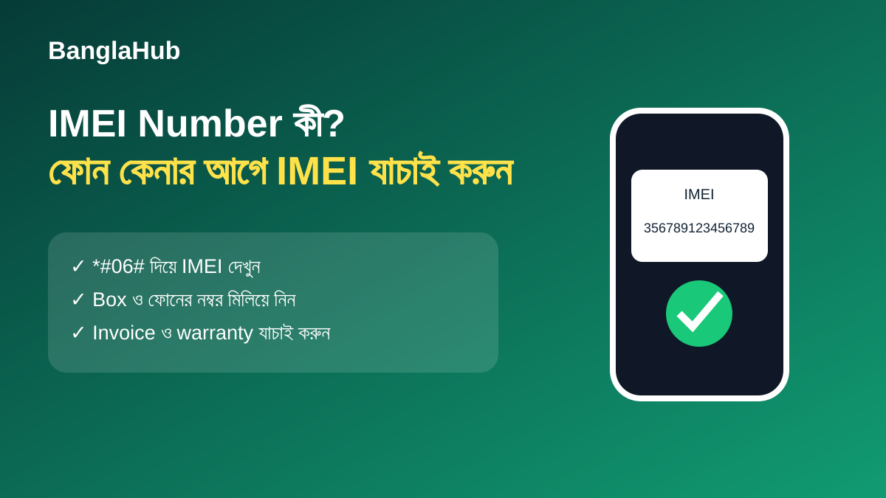

IMEI Number কী? ফোন কেনার আগে কীভাবে যাচাই করবেন
IMEI হলো একটি মোবাইল ডিভাইস শনাক্ত করার নম্বর। নতুন বা ব্যবহৃত ফোন কেনার সময় device-এর IMEI, box এবং invoice-এর তথ্য মিলিয়ে দেখা একটি গুরুত্বপূর্ণ যাচাই ধাপ।

IMEI কীভাবে দেখবেন?
অনেক ফোনে Phone app খুলে *#06# ডায়াল করলে IMEI দেখা যায়। কিছু ডিভাইসে Settings-এর About phone অংশেও এটি পাওয়া যায়।
কেনার আগে কী মিলাবেন?
ফোনে দেখানো IMEI, box-এর label এবং invoice-এ থাকা তথ্য মিলিয়ে দেখুন। Dual-SIM ফোনে একাধিক IMEI থাকতে পারে। কোনো অমিল থাকলে কেনার আগে বিক্রেতার কাছে ব্যাখ্যা চান।
Official status যাচাই
দেশভেদে IMEI বা device registration যাচাইয়ের সরকারি ব্যবস্থা থাকতে পারে। বাংলাদেশে ব্যবহারের ক্ষেত্রে সংশ্লিষ্ট সরকারি বা নিয়ন্ত্রক সংস্থার সর্বশেষ নির্দেশনা অনুসরণ করুন।
FAQ
IMEI কি ফোনের password?
না। এটি device identifier; তাই অপ্রয়োজনে প্রকাশ্যে শেয়ার না করাই ভালো।
IMEI মিললেই ফোন নিশ্চিতভাবে original?
শুধু IMEI দিয়ে সবকিছু নিশ্চিত করা যায় না। invoice, warranty, seller এবং device condition-ও যাচাই করুন।
আরও পড়ুন: Android ফোন কেনার গাইড · 5G ফোন কেনার আগে যা দেখবেন